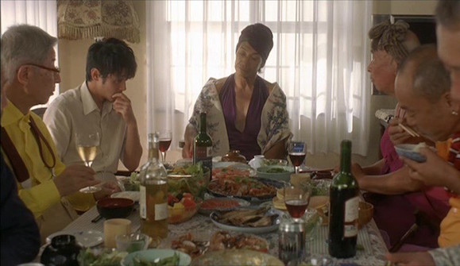
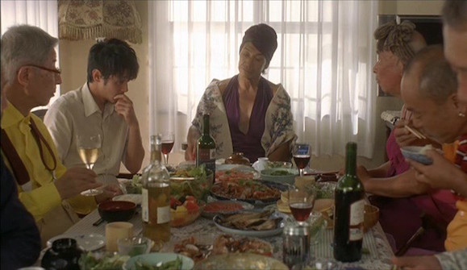

"DIY and Open Source care solutions"
7 May 2017
"Whether it is a ramp for disabled people or self-produced insulin, OpenCare's projects arise from collaboration between users and innovators"
After the festival, where do we go from here?
A massively distributed R&D lab for the post-job economy
openvillage.edgeryders.eu
Congratulations, you've made it to retirement age, and without a pension or investment plan, you'll have to hack your way through your golden years like you did your youth.
Have no fear, with a little bit of innovative thinking and peer collaboration, you can seamlessly cruise through your elder dementia in style!
Many precarious workers do manage to make it to retirement, and it just might happen to you. Some Americans have turned to outsourcing eldercare by shipping their parents off to India, to live like a Maharaja on $2000/month.
In Japan, the film "Mezon do Himiko" tells the story of a retirement home for elderly transvestites and homosexuals. They managed to fund their retirement from a successful Tokyo nightclub and wealthy donors.
 

But are Ledgestriders™ so well prepared for their retirement?
Do you really think people will want to read your funding applications when you're wearing a diaper?
It's time to start exploring options for people who aren't part of the rank and file society before it's too late.
But you are now 96 years old and your robotic care assistant accidentally sucked up your dentures into the #opensource vacuum cleaner, because the IoT fridge and stove were chatting away and inadvertently knocked the robot offline.
It's really not a problem because a neighbour in your HackSpace has a 3D printer and (after downloading a free 3D file off Thingiverse) you manage to print a new set of teeth.
Unfortunately, they are not the right size and you wind up gumming your food at that evening's Disco Soup event, getting chunks of organic radish all over your sustainable milk-fiber bib.
And since your robotic helper is on the fritz, you decide to wash yourself off in the hipster bathing facility but slip and break your hip.
Again, your mates have this problem covered and start using 3D printed bones to grow you a new leg. Unfortunately, the operation doesn't go well and you get an infection.
However there is a cure for those with sufficient computational capacity: you can manufacture your own patent-free medicine based on your individual DNA.
You have advanced to the next level of retirement: that of constantly badgering your kids to come and visit you!
But not everyone will be so lucky in the future, so it is time to explore the different possibilities that can be made to exist for people outside the "system".
With OpenVillage we are creating a network of houses where you can give and receive support while working on the projects that matter to you.
So we invite you on a journey to make "the good life" happen - by collaborating in a free and open way on groundbreaking ideas for prosperous lives full of meaning, love and mutual respect...
"We have all contributed to the journey to OpenVillage that started months ago: the community members, the OpenCare project and the Fellows.
But Edgeryders has contributed by far the most and saw the need to get people moving in the same direction. I can’t imagine many would disagree with the value they have gotten out of it so far. Only now, while synthesizing notes several days later, it dawns on me. Everything that has been done, where Edgeryders took a leading role, has been the investment. Will we put to use what has been built?"
- @WinniePoncelet
And tell us in which ways you can contribute.
Credits: Nadia EL-Imam, Jeff Andreoni (Creative Writing), Owen Gothill (Design)
"Whether it is a ramp for disabled people or self-produced insulin, OpenCare's projects arise from collaboration between users and innovators"
"Social movements led by self-organising citizens are becoming the cutting edge of development. Establishing effective partnerships with them requires abandoning much of the implicit paternalism that informs development work"
"They have brought together a whole range of people mainly (but not all!) young and radical. They are doing some incredible work there. Am sorely tempted to head off there and alter the age demographic!"

"What united [Edgeryders] was not a political ideology, but the dead-end conditions of austerity and the hope of figuring out better ways forward."
"a group of self-described “civic hackers” who run a “social clinic” that embeds “skilled individuals within communities that could benefit from their presence."
"..steps towards solving the major problems plaguing small towns such as Matera: massive land run-off, reduction of social services in the wake of European austerity measures, and not least unused housing stock."
"..an agile organization of individuals pooling know-how and professional networks at the service of social innovation."
"We explore amazing care services that communities are providing - right now - to people that the state and private business have let down."
"Edgeryders built an Internet commune in Matera, a city similar to Petra in Jordan. They are both among the oldest inhabited settlements in the world."
"Edgeryders is a leading innovation partner of UNDP for testing new ways of working."
Click to read more >>
"Our co-founder Nadia EL-Imam was named Minister of Labour in an ideal government for Sweden in the country's leading financial newspaper."